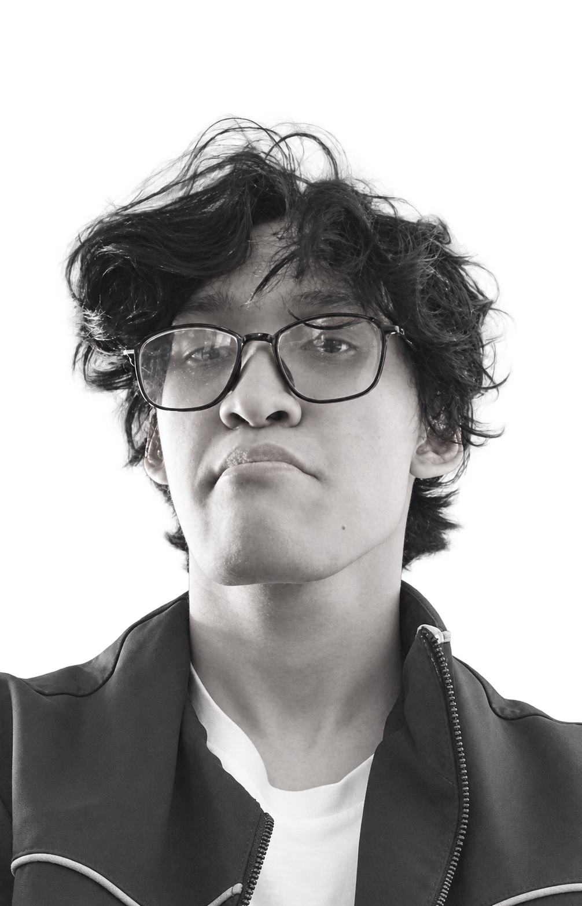

02 / ABOUT ME
HALO,
HALO,
SAYA DAFFA.
Saya Muhamad Daffa Ighnan Fauzan, mahasiswa Teknik Informatika di Universitas Suryakancana. Saya memiliki hobi dan ketertarikan di bidang video editing, game, VFX production, dan desain.
Bagi saya, teknologi dan kreativitas punya ruang untuk bertemu. Saya ingin terus belajar bagaimana ide bisa disampaikan lewat gambar, video, dan tampilan visual.

DATA DIRI
| Nama lengkap | Muhamad Daffa Ighnan Fauzan |
|---|---|
| Program studi | Teknik Informatika |
| Universitas | Universitas Suryakancana |
| Hobi & ketertarikan | Video editing, game, VFX production, dan desain |
RUANG UNTUK BELAJAR.
Saya tertarik untuk memahami alur editing, mengamati efek visual dalam game, dan mencoba mengolah ide melalui desain. Website sederhana ini juga menjadi bagian dari proses belajar saya di mata kuliah Pemrograman Web I.
Lihat sisi visual sebuah game ↗